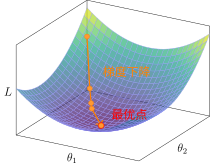
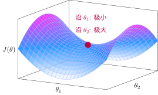
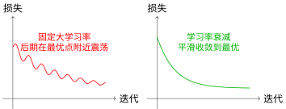
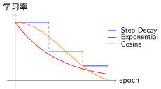

梯度下降与优化算法#
沿着最陡方向下山#
想象你在山上迷路了，想要下到山谷：
当前位置：参数当前值 \(\theta_t\)
最陡下降方向：负梯度方向（你脚下最陡的下坡方向）
步长：学习率 \(\eta\)（你每一步迈多大）
目标：到达山谷最低点（损失 \(L\) 最小）
神经网络训练转化为优化问题后，我们需要找到损失函数的最小值点。梯度下降（Gradient Descent）就是解决这个问题的迭代算法。
核心思想：在当前位置，沿着梯度下降方向（损失减小最快的方向）迈出一小步。
其中 \(\eta\) 是学习率（步长），\(\nabla_\theta J(\theta)\) 是损失函数对参数的梯度。

梯度下降：从初始点逐步逼近最小值
学习率的重要性#
学习率的选择至关重要：
学习率 |
效果 |
类比 |
|---|---|---|
太小 |
收敛极慢 |
婴儿学步 |
合适 |
快速收敛 |
正常行走 |
太大 |
震荡/发散 |
大跳，可能跳过山谷 |

学习率过大导致震荡
梯度下降的变体#
在梯度下降与优化算法中，我们根据反向传播算法计算的梯度更新参数。根据使用多少数据计算梯度，有三种变体：
批量梯度下降（Batch GD）#
使用全部数据计算梯度：
特点：
梯度估计准确，收敛稳定
每次迭代计算量大，不适合大数据集
随机梯度下降（SGD）#
每次使用一个样本计算梯度：
特点：
计算快，适合在线学习
梯度有噪声，收敛不稳定
噪声可能帮助跳出局部最优
小批量梯度下降（Mini-batch GD）#
使用一小批样本（通常32-256个）计算梯度：
特点：
平衡计算效率和稳定性
可以利用GPU并行计算
深度学习中最常用
高级优化算法#
Loss Landscape：损失函数塑造的优化地形#
Loss Landscape（损失景观）描述了损失函数在参数空间中的形状。想象一个高维的山地地形：山谷代表损失低的区域，山峰代表损失高的区域。
在深度学习中，这个景观通常是非凸的，包含：
局部最优：局部山谷（浅坑）
全局最优：最深的山谷（最优解）
鞍点：马鞍形状的点（高维空间中非常常见）

Loss Landscape：局部最优 vs 全局最优
关键观察：
全局最优比局部最优明显更深（红色点远低于橙色点）
两个最优之间由鞍点（紫色）分隔
优化算法需要"翻过"鞍点才能从局部最优到达全局最优
鞍点的详细展示：
鞍点像一个马鞍——沿一个方向是极小值，沿另一个方向是极大值：

鞍点：马鞍形状
深度学习的特殊情况：
高维空间中，鞍点比局部最优更常见
随机梯度下降的噪声有助于跳出局部最优和鞍点
现代网络通常能找到足够好的解，即使不是全局最优
动量法：积累速度翻越障碍#
直觉：想象滚雪球下山，球会积累动量，越滚越快，同时可以滚过小的坑洼。在 loss landscape 中，动量帮助我们冲过鞍点和平坦区域。
原理：引入速度变量，累积历史梯度：
效果：
加速收敛（尤其在梯度方向一致时）
减少震荡（梯度方向变化时动量抵消）
帮助跳出局部最优
Adam（自适应矩估计）#
Adam [KB15] 是目前最常用的优化算法之一。
直觉：为每个参数单独调整学习率。频繁更新的参数用较小学习率，稀疏更新的用较大学习率。
特点：
结合动量和自适应学习率
对超参数不敏感，默认首选
适合大多数深度学习任务
算法 |
适用场景 |
特点 |
|---|---|---|
SGD + Momentum |
图像分类、大模型 |
泛化性能好，需调学习率 |
Adam |
默认首选、NLP、推荐系统 |
自适应、收敛快、易用 |
AdamW |
Transformer、大模型 |
改进权重衰减，效果更好 |
学习率调度：为什么需要调整学习率？#
核心问题#
训练初期，参数远离最优，需要大学习率快速接近目标。 训练后期，参数接近最优，需要小学习率精细调整，避免在最优点附近震荡。

固定学习率 vs 学习率调度
常见学习率调度策略#

学习率调度策略对比
1. 步长衰减（Step Decay）#
策略：每N个epoch，学习率乘以衰减系数（如0.1）
适用场景：
传统图像分类任务（ImageNet训练标配）
当验证集损失不再下降时手动降低学习率
# 每30个epoch，学习率乘以0.1
scheduler = optim.lr_scheduler.StepLR(optimizer, step_size=30, gamma=0.1)
特点：阶梯式下降，简单有效，但需要预设衰减时机。
2. 指数衰减（Exponential Decay）#
策略：每个epoch学习率按指数衰减
适用场景：
需要平滑连续衰减
训练轮数较多时
# 每个epoch学习率乘以0.95
scheduler = optim.lr_scheduler.ExponentialLR(optimizer, gamma=0.95)
3. 余弦退火（Cosine Annealing）#
策略：学习率按余弦函数从初始值降到接近0
适用场景：
现代Transformer模型（BERT、GPT等）
配合Warmup使用效果更佳
scheduler = optim.lr_scheduler.CosineAnnealingLR(optimizer, T_max=100)
4. 预热（Warmup）#
问题：训练初期参数随机初始化，梯度可能很大且不稳定，大学习率会导致震荡。
策略：从很小的学习率开始，线性增加到目标学习率。

Warmup + Cosine Annealing
# 组合使用：Warmup + Cosine Annealing
scheduler1 = optim.lr_scheduler.LinearLR(
optimizer,
start_factor=0.01, # 从1%的目标学习率开始
end_factor=1.0,
total_iters=5 # 前5个epoch预热
)
scheduler2 = optim.lr_scheduler.CosineAnnealingLR(
optimizer,
T_max=95 # 剩余95个epoch余弦退火
)
scheduler = optim.lr_scheduler.SequentialLR(
optimizer,
schedulers=[scheduler1, scheduler2],
milestones=[5]
)
选择建议#
策略 |
推荐场景 |
优点 |
缺点 |
|---|---|---|---|
Step Decay |
图像分类、CNN |
简单有效 |
需预设衰减时机 |
Exponential |
长周期训练 |
平滑连续 |
衰减过快 |
Cosine |
Transformer、NLP |
效果通常最好 |
相对复杂 |
Warmup + Cosine |
大模型训练 |
稳定+效果好 |
需调两个参数 |
PyTorch实践#
基本训练循环
import torch import torch.nn as nn import torch.optim as optim # 定义模型、损失函数、优化器 model = MyModel() criterion = nn.CrossEntropyLoss() optimizer = optim.Adam(model.parameters(), lr=0.001) # 训练循环 for epoch in range(num_epochs): for data, target in dataloader: # 前向传播 output = model(data) loss = criterion(output, target) # 反向传播 optimizer.zero_grad() # 清空梯度 loss.backward() # 计算梯度 optimizer.step() # 更新参数
学习率调度
# 组合调度：预热 + 余弦退火 scheduler1 = optim.lr_scheduler.LinearLR(optimizer, start_factor=0.1, total_iters=5) scheduler2 = optim.lr_scheduler.CosineAnnealingLR(optimizer, T_max=45) scheduler = optim.lr_scheduler.SequentialLR(optimizer, [scheduler1, scheduler2], milestones=[5]) for epoch in range(num_epochs): train(...) scheduler.step() # 更新学习率
训练技巧#
梯度裁剪
防止梯度爆炸：
loss.backward() torch.nn.utils.clip_grad_norm_(model.parameters(), max_norm=1.0) optimizer.step()
批归一化（BatchNorm）
稳定训练、加速收敛：
self.bn = nn.BatchNorm1d(num_features)
早停（Early Stopping）
验证集损失不再下降时停止训练，防止过拟合。
总结#
梯度下降是深度学习训练的基石：
基本原理：沿反向传播算法计算的负梯度方向迭代更新参数
学习率：最关键的超参数，过大震荡，过小收敛慢
Mini-batch：平衡效率和稳定性，深度学习标配
Adam：默认首选优化器，自适应、易用
学习率调度：训练过程中调整学习率能提升效果
参考文献#
Diederik P Kingma and Jimmy Ba. Adam: a method for stochastic optimization. In International Conference on Learning Representations. 2015.
贡献者与修订历史
查看详细修订记录
-
59126f42026-04-26 - Heyan Zhu: docs(math-fundamentals): update content structure and add citations -
ae2053f2026-04-26 - Heyan Zhu: docs(math-fundamentals): add task-formulations and update related content -
756a7932026-04-25 - Heyan Zhu: docs(math-fundamentals): update content structure and improve explanations